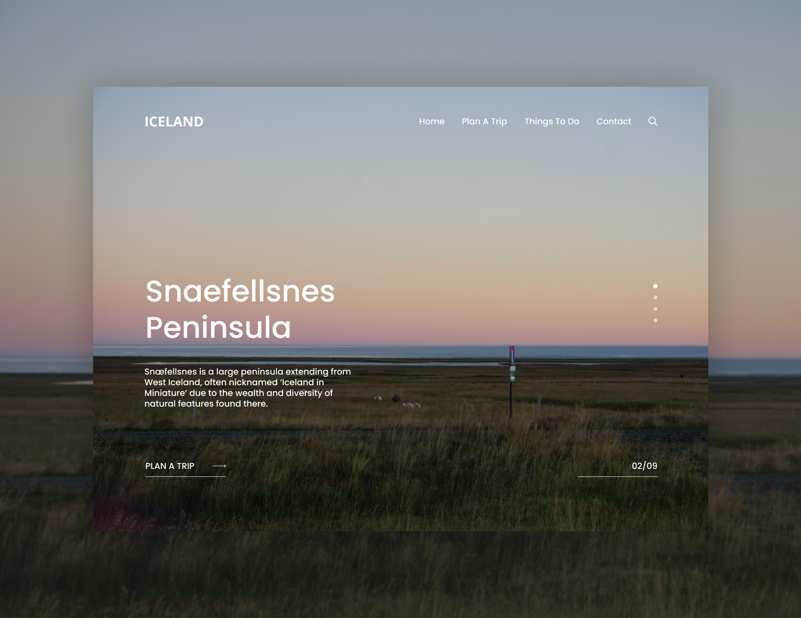
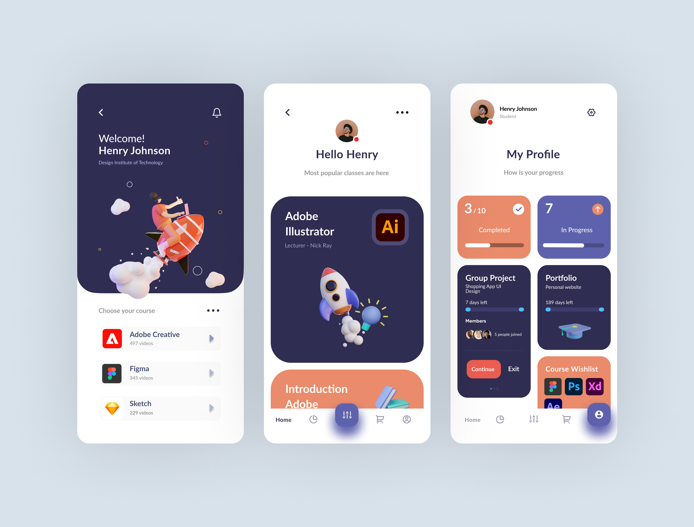
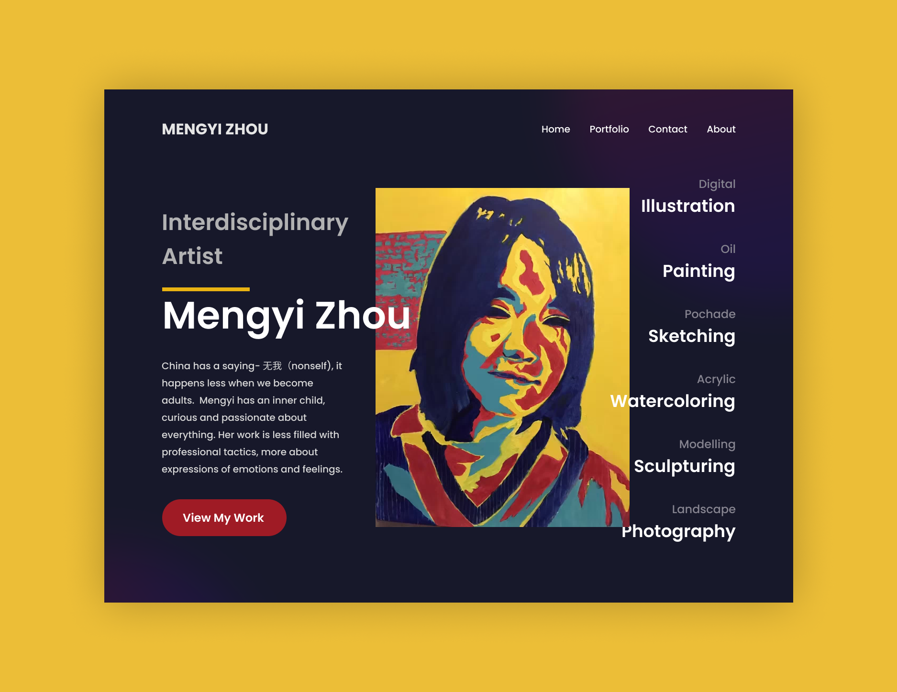
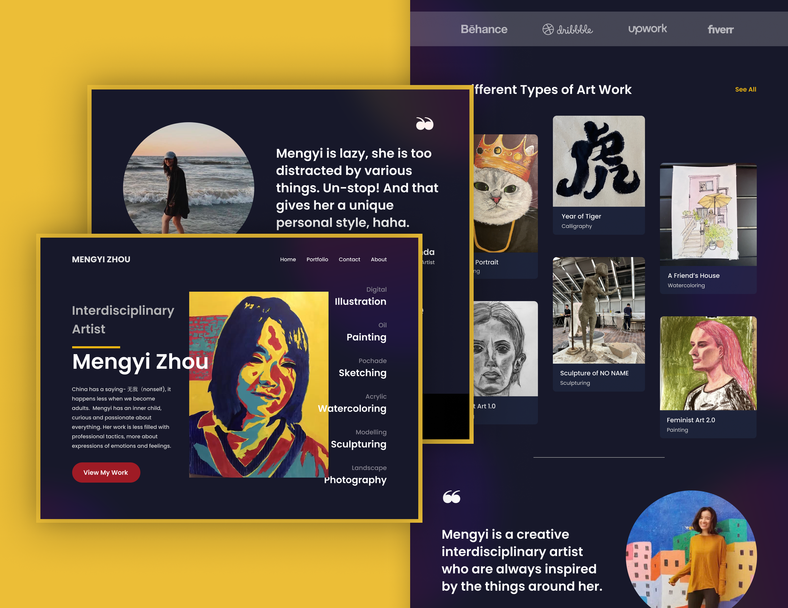
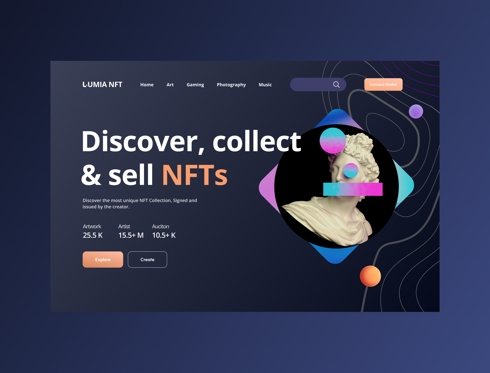
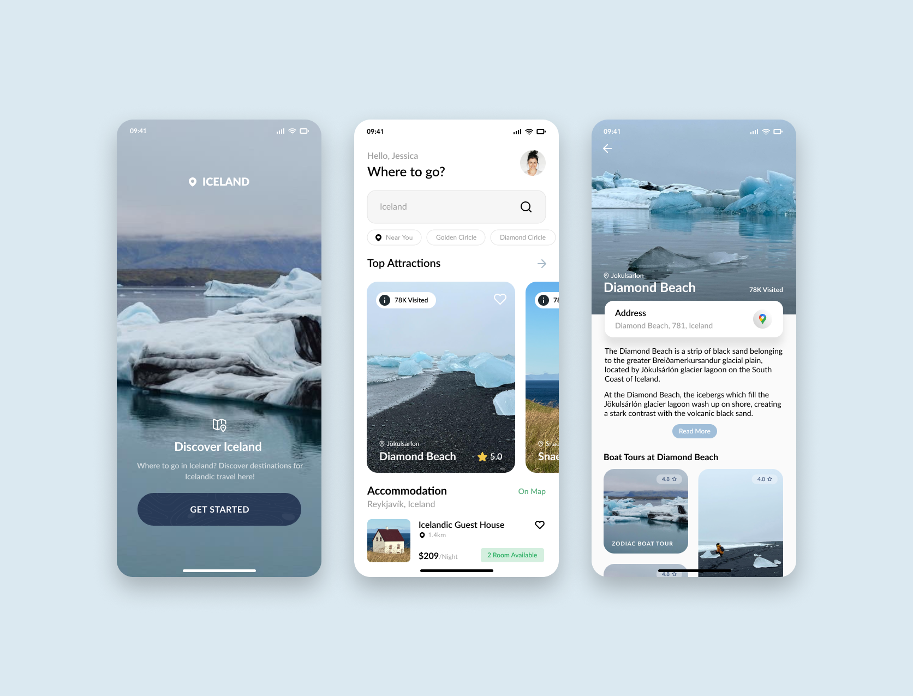
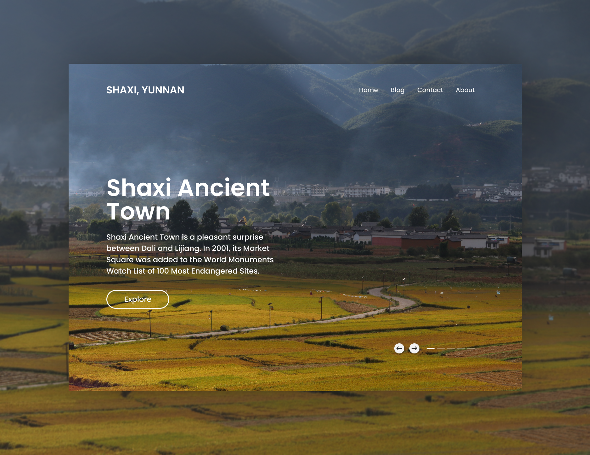
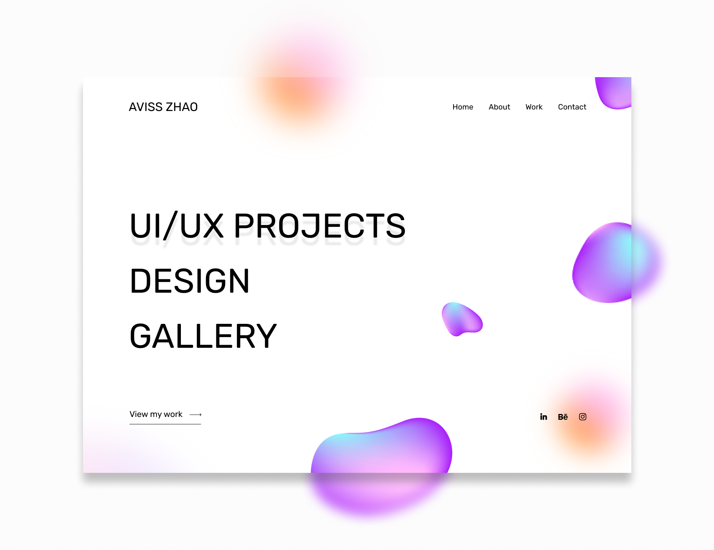

Creative UI Design
A collection of personal UI design explorations — spanning apps and websites — focused on aesthetics, visual composition, and creative expression.

Context
Outside of my main projects, I enjoy exploring creative UI design for apps and websites. These are not full-scale case studies — they focus on the aesthetic side of design: experimenting with color combinations, typography, layout composition, and visual hierarchy to create visually compelling interfaces.
These explorations help me develop and sharpen skills in visual design, color theory, and intuitive UI composition — skills that directly inform my broader UI/UX practice.
Creative UI Design

Online Design Course Hub UI

Interdisciplinary Artist Mengyi Zhou's Website

Interdisciplinary Artist Mengyi Zhou's Website

Lumia NFT Website

Iceland Travel Guide Website

Iceland Travel Guide App

Shaxi Ancient Town Website

Portfolio Website
Outcomes
These personal UI explorations complement my design portfolio by showcasing visual sensibility, creativity, and attention to detail beyond the constraints of client work. More than anything, they're a space for self-expression — a way to explore personal style, aesthetic preferences, and design instincts freely.